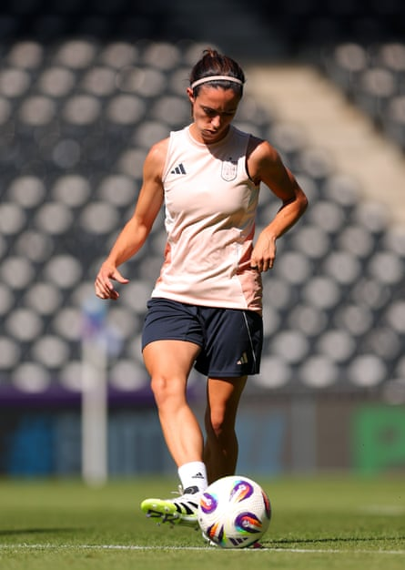

I f Spain required any form of pick-me-up before a summer that many assume will bathe them in gold, it came in the sight of Aitana Bonmatí appearing at their second training session in Switzerland. She tuned up on an exercise bike during the first part of Tuesday’s warm-up before later working with the ball.
If the sighs of relief were audible from Madrid, Barcelona and beyond, the Spanish football federation’s accompanying statement resembled a giant exhalation of its own. “With Aitana back, the entire group is now at their base camp in Lausanne, ready to take on the European dream,” it said.
Bonmatí’s bout of viral meningitis had been the worst possible pre-tournament news, primarily because of the ramifications for the two-time Ballon d’Or winner’s health. It is impossible to know how her fitness may be affected, but what a boost it would be if an expectant crowd in Bern are treated to even the briefest of cameos on Thursday.
Spain will seek to make an early statement against Portugal at a European Championship where the sense of opportunity is tantalising. If they meet expectations , they will surely rubber-stamp their status as the greatest international team of the modern era.
This is not the same squad that swept all before them in Australia and New Zealand . Twelve World Cup winners will not be present for various reasons and there was tension in the air last month when Jenni Hermoso, Spain’s record goalscorer, blasted the head coach, Montse Tomé, on social media after being omitted
Hermoso, dragged so appallingly into the Luis Rubiales scandal two years ago, referenced removing “environments with such a bad energy from my life”. Tomé had explained that her conscience was clear after leaving the 35-year-old out.
Should Spain go all the way, such disputes will matter little. They would love to claim their first continental title without the kind of cloud that engulfed them in Sydney. A huge chunk of joy was taken away from them. It does no harm they have been dealt the kindest possible landing in Group B, particularly when Bonmatí will clearly require easing in. Portugal, Belgium and Italy will not offer much of a challenge for first place; their biggest difficulty may be ensuring that cruising through those assignments does not leave them undercooked.
Aitana Bonmatí takes part in a passing drill during training in Bern.Photograph: Fran Santiago/Uefa/Getty Images
In April, Spain beat their Iberian rivals 7-1 and 4-2 in Nations League ties; a month later they hammered Belgium 5-1. The hope for neutrals will be that their opponents rise to the stage, perhaps with help from a swathe of the 255,000 Portuguese nationals who live in Switzerland. Spain will have to switch on to ensure they are not caught cold in the quarter-finals, where they are likely to face the hosts or an improving Norway.
That is one reason the captain, Irene Paredes, who will be suspended from the Portugal game after a red card in the qualifier against Czech Republic last July, preached caution when assessing their prospects this week. Maybe it helps that Spain, for all the galaxy of talent at their disposal, are no strangers to disappointment. They finished outside the medals at Paris 2024, losing to Germany in the tussle for bronze. Tomé came under fire but it felt, at times, as if the emotional weight of the previous 12 months had contributed to their mini-slump.
Paredes referred to the intense frustration of missing out last summer, a fate confirmed when Alexia Putellas failed to convert a late penalty against Germany. At least Putellas, back from her most recent injury hell , will grace the Swiss stage. Perhaps the reminder that other contenders pack a punch will keep the favourites keen in a schedule that may not overexert them until the last four. Maybe the fact 10 of their squad were badly bruised by Barcelona’s Champions League final defeat by Arsenal will add a further sense of scores to settle.
Spain were given a useful test by Japan in Leganés before leaving home. A 3-1 win offered plenty of encouragement while leaving space to correct errors; it also highlighted once again the gifts of Clàudia Pina, their match-winner against England last month and a lethal operator in the box. “When you see her with the ball you sense danger,” Tomé said. The problem for Spain’s opponents is that Pina is hardly alone in delivering that.
Should Bonmatí hit her stride quickly then that threat will increase. “She’s so eager – we have to hold her back a bit – but according to the medical staff, her progress is positive,” Tomé said. “Health comes first and she’s been able to complete all the tasks required.”
If Spain can set down a marker they will be a step closer to realising all those confident predictions of their supremacy and, perhaps, affording themselves the unfettered celebrations they were denied two years ago. The dream is within touching distance for Tomé and a team with few parallels.